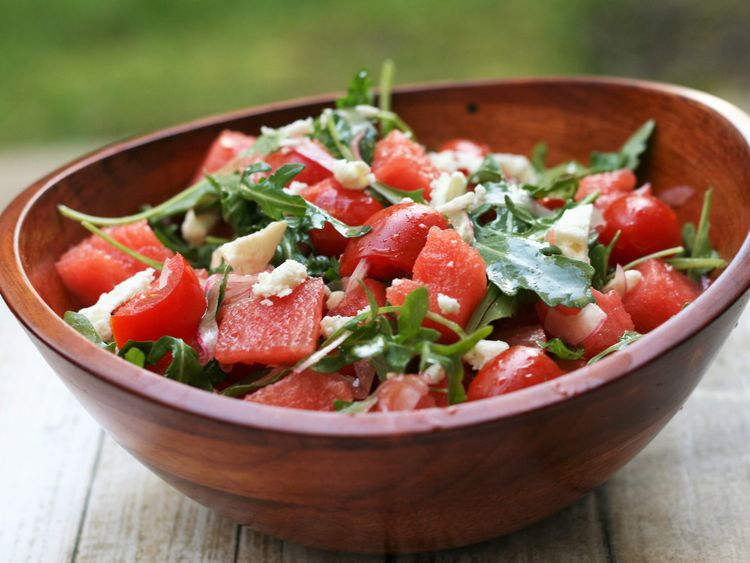

Home
Watermelon Salad with Feta

Description
A chunky watermelon salad with feta, arugula, red onion, and tomatoes that is enjoyed by all.
Thanks to the watermelon, the kids like it also! Super refreshing, the best
healthy snack for summer vacation.
Ingredients (8 servings)
- 3 tablespoons olive oil
- 2 teaspoons white balsamic vinegar
- ½ teaspoon kosher salt
- 8 ounces grape tomatoes, halved
- 3 cups arugula
- 1 cup sliced red onion
- 2 pounds watermelon, cubed
- 4 ounces feta cheese, cut into 1/4-inch cubes
Directions
- Whisk olive oil, vinegar, and salt together in a large mixing bowl.
- Add tomatoes, arugula, and red onion; toss to coat.
- Gently stir in watermelon and feta cheese to serve.